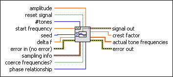
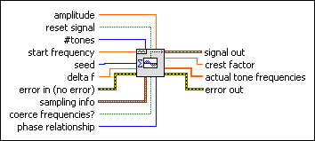

Basic Multitone VI
Owning Palette: Waveform Generation VIs
Requires: Full Development System
Generates a waveform that is the sum of integer cycle sine tones.

 Add to the block diagram Add to the block diagram |
 Find on the palette Find on the palette |
Owning Palette: Waveform Generation VIs
Requires: Full Development System
Generates a waveform that is the sum of integer cycle sine tones.

| Add to the block diagram |
Find on the palette |
 |
amplitude is the value that the sum of all the tones is scaled to and is the largest absolute value that the waveform contains. The default is –1. amplitude is useful when outputting the waveform to an analog output channel. If the maximum value that the hardware can output is 5 volts, set amplitude to 5. If amplitude  0, the scaling is not applied. 0, the scaling is not applied.
|
||||||
 |
reset signal, if TRUE, resets the phase to the phase control value and the time stamp to zero. The default is FALSE. | ||||||
 |
#tones is the number of tones present in the output waveform. | ||||||
|
start frequency is the lowest tone frequency generated. This value must be an integer multiple of Fs/#s. The default is 10. | ||||||
|
seed, when > 0, causes reseeding of the noise sample generator. seed is ignored if phase relationship is set to Linear. | ||||||
|
delta frequency is the magnitude of the spacing between adjacent tone frequencies. delta frequency must be an integer multiple of Fs/#s. If start frequency is 100 Hz, delta frequency is ten, and #tones is three, the tone frequencies generated are 100 Hz, 110 Hz, and 120 Hz. | ||||||
 |
error in describes error conditions that occur before this node runs. This input provides standard error in functionality. | ||||||
 |
sampling info contains sampling information.
| ||||||
|
If coerce frequencies? is TRUE, the specified tone frequencies will be coerced to the nearest multiple of Fs/n. | ||||||
 |
phase relationship is the distribution of the phases of the sine tones. The phase distribution affects the Peak/RMS ratio of the overall waveform.
|
||||||
 |
signal out is the generated waveform. | ||||||
 |
crest factor is the ratio of the Peak voltage to the RMS voltage of signal out. | ||||||
 |
actual tone frequencies are the tone frequencies generated after accounting for coercion, if coerce frequencies? is TRUE, and the Nyquist criteria. | ||||||
 |
error out contains error information. This output provides standard error out functionality. |
The frequency domain representation of this waveform is a sequence of impulses at the specified tone frequencies and zero at all other frequencies. The sine tones are generated using the frequency and samples information. The phases of the tones are random and the amplitude of each tone is equal. This raw array then is scaled so that the largest absolute value is equal to amplitude. Finally, the waveform is bundled. The X0 element of the waveform is always set equal to 0 and the delta X element is set equal to 1/Fs.